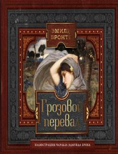

BDMuhabbat, nafrat va qasos haqidagi ingliz gotik romanining o'zbek tarjimasi.
Bu Emily Brontëning yagona romani 'Wuthering Heights' asarining o'zbek tilidagi tarjimasi. Roman asrab olingan o'g'il Xitklif va mulk egasining qizi Ketrin o'rtasidagi halokatli muhabbat, nafrat, qasos va kechirim haqida hikoya qiladi. Asar sirli va ma'yus tabiat fonida inson qalbining chuqur sirlarini ochib beradi.